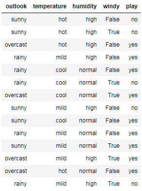
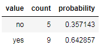
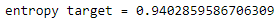
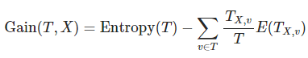
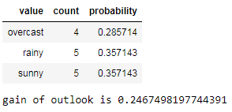
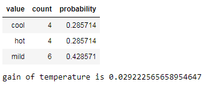
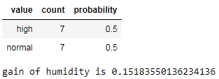
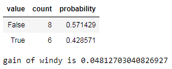
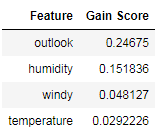

Zulfa Lailatul Marom (180411100134)
Seleksi Fitur Menggunakan Information Gain
Seleksi fitur adalah tahapan praproses terutama mengurangi dimensi data(kolom dalam tabel). Tujuan dari seleksi fitur ini adalah untuk mengurangi jumlah kolom yang banyak, serta agar objek bisa digambarkan.
Dari suatu data yang memiliki banyak fitur tersebut, kita bisa mengurangi jumlah fiturnya dengan memilih fitur mana yang paling penting, melalui Information Gain. Apa itu information gain ? Information Gain merupakan metode seleksi fitur paling sederhana dengan
melakukan perangkingan atribut dan banyak digunakan dalam aplikasi
kategorisasi teks, analisis data microarray dan analisis data citra.
Contoh data permasalahan cuaca
from pandas import*
from IPython.display import HTML, display
from tabulate import tabulate
from math import log
from sklearn.feature_selection import mutual_info_classif
df = read_csv("feature selection.csv", usecols=[0,1,2,3,4])
def table(df):
display(HTML(tabulate(data, tablefmt='html',showindex=False, headers='keys')))
table(df)

Mencari Entropy
Entropy dapat dihitung menggunakan rumus berikut.
$$ Entropy(S) = ∑_i^c - P_i log_2 P_i $$
ket :
c : jumlah nilai yang ada pada atribut target
Pi : probability muncul dalam row
def findEntropy(column):
rawGroups = df.groupby(column)
targetGroups = [[key, len(data), len(data)/df[column].size] for key,data in rawGroups]
targetGroups = DataFrame(targetGroups, columns=['value', 'count', 'probability'])
return sum([-x*log(x,2) for x in targetGroups['probability']]), targetGroups, rawGroups
entropyTarget, groupTargets, _ = findEntropy('play')
table(groupTargets)
print('entropy target =', entropyTarget)


Mencari Gain
Kemudian nilai information gain yang digunakan untuk mengukur efektifitas suatu atribut dalam pengklasifikasian data, dapat dihitung sebagai berikut.

def findGain(column):
entropyOutlook, groupOutlooks, rawOutlooks = findEntropy(column)
table(groupOutlooks)
gain = entropyTarget-sum(len(data)/len(df)*sum(-x/len(data)*log(x/len(data),2)
for x in data.groupby('play').size()) for key,data in rawOutlooks)
print("gain of",column,"is",gain)
return gain
gains = [[x,findGain(x)] for x in ['outlook','temperature','humidity','windy']]
Outlook

Temperature

Humidity

Windy

Hasil dari keseluruhan Gain
table(DataFrame(gains, columns=["Feature", "Gain Score"]).sort_values("Gain Score")[::-1])

Dari skor gain yang telah dihitung, kita dapat menentukan fitur mana yang paling penting yaitu skor gain dengan urutan tertinggi. Jadi, untuk urutan yang terendah dapat dihilangkan tergantung dari berapa fitur yang akan digunakan.
Terimakasih, sekian penjelasan tentang Seleksi Fitur Menggunakan Teknik Information Gain. Maaf jika ada salah kata atau penulisan. Semoga dapat bermanfaat untuk kalian. Jangan lupa dipelajari lebih dalam:)